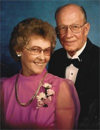

Davidia Davidsdatter
K, #1602, f. 1810, d. 1887
Foreldre
Biografi
Davidia Davidsdatter ble født i 1810 på/i Nord-Trøndelag. Hun giftet seg med
Niels Jonassen den 17 oktober 1844. Hun døde i 1887 på/i Nord-Trøndelag.
| Sist redigert |
21 oktober 2010 00:00:00 |
Anne Sakariasdatter
K, #1603, f. 5 september 1817, d. 29 mai 1849
Foreldre
Biografi
Anne Sakariasdatter ble født den 5 september 1817 på/i Lund, Nærøy, Nord-Trøndelag. Hun giftet seg med
Christian Jonassen Kjelbotnet den 12 oktober 1848. Hun døde den 29 mai 1849 på/i Jøa, Fosnes, Nord-Trøndelag.
| Sist redigert |
21 oktober 2010 00:00:00 |
Ellen Nilsdatter
K, #1604, f. 1814, d. 7 desember 1855
Foreldre
Biografi
Ellen Nilsdatter ble født i 1814. Hun giftet seg med
Bendik Jonassen Kjelbotnet den 28 august 1847. Hun døde den 7 desember 1855 på/i Nord-Trøndelag.
| Sist redigert |
21 oktober 2010 00:00:00 |
Ellen Johanna Pedersdatter
K, #1605, f. 29 juni 1832, d. 15 april 1917
Foreldre
Biografi
Ellen Johanna Pedersdatter ble født den 29 juni 1832 på/i Hamarsøya, Vemundvik, Namsos, Nord-Trøndelag. Hun giftet seg med
Bendik Jonassen Kjelbotnet den 16 oktober 1859. Hun døde den 15 april 1917 på/i Fosnes, Nord-Trøndelag.
| Sist redigert |
21 oktober 2010 00:00:00 |
Serine Margrethe Olesdatter
K, #1606, f. 14 februar 1831, d. 19 januar 1878
Foreldre
Biografi
Serine Margrethe Olesdatter ble født den 14 februar 1831. Hun giftet seg med
Christoffer Carlsen Jonassen den 13 juli 1851. Hun giftet seg med
Magnus Johnsen den 27 desember 1866. Hun døde den 19 januar 1878 på/i Fosnes, Nord-Trøndelag.
| Sist redigert |
21 oktober 2010 00:00:00 |
Johan Peter Petersen Risvik
M, #1607, f. 16 april 1835, d. 11 oktober 1896
Foreldre
Biografi
Johan Peter Petersen Risvik ble født den 16 april 1835 på/i Risvika, Nærøy, Nord-Trøndelag. Han giftet seg med
Ingeborg Margrete Jonasdatter Kjeldbotnet den 1 januar 1863. Han døde den 11 oktober 1896 på/i Kolvereid, Nærøy, Nord-Trøndelag.
Johan Peter Petersen Risvik kjøpte den 11 juni 1866 Bogen 17/3, Lund; Kolvereid, Nærøy, Nord-Trøndelag. Han kjøpte den 19 september 1871 Hestvika 6/5, Buøya; Kolvereid, Nærøy, Nord-Trøndelag.
| Sist redigert |
21 oktober 2010 00:00:00 |
| Slektskap | 5-menning 5 ganger forskjøvet til Håkon Wahl |
Kirsten Jakobsdatter
K, #1608, f. 1753
Foreldre
Biografi
Kirsten Jakobsdatter ble født i 1753 på/i Otterøy, Nord-Trøndelag. Hun giftet seg med
Jakob Jonsen.
| Sist redigert |
21 oktober 2010 00:00:00 |
| Slektskap | 3. tippoldemor til Lovise Julie Eggan |
Valborg Johansdatter Letvik
K, #1609, f. omtrent 1746
Biografi
Valborg Johansdatter Letvik ble født omtrent 1746. Hun giftet seg med
Anders Hermannsen i 1769.
| Sist redigert |
16 desember 2015 00:00:00 |
Seth Jonsen
M, #1610, f. 1751, d. 16 juli 1821
Foreldre
Biografi
| Sist redigert |
21 oktober 2010 00:00:00 |
Per Elden
M, #1611, f. 21 april 1922, d. 1 mai 2000
Foreldre
Familie: Elsif Ingebjørg Waade (f. 4 februar 1925, d. 17 mai 2015)
| Sønn | Magnar Elden (f. 28 august 1947, d. 20 november 1979) |
| Sønn | Eivind Elden |
| Datter | Turid Elden |
| Sønn | Per Odd Elden |
Biografi
Per Elden ble født den 21 april 1922 på/i Helbostad, Namdalseid, Nord-Trøndelag. Han giftet seg med
Elsif Ingebjørg Waade. Han døde den 1 mai 2000. Han ble gravlagt på/i Namdalseid kirkegård, Namdalseid, Nord-Trøndelag.
Per Elden kjøpte i 1944 Helbostad øvre 168/11, Helbostad, Namdalseid, Nord-Trøndelag.
| Sist redigert |
11 mai 2016 00:00:00 |
Peter Magnus Johannessen Rokken
M, #1613, f. 11 mai 1840, d. 6 mars 1877
Foreldre
Biografi
Peter Magnus Johannessen Rokken ble født den 11 mai 1840 på/i Rokken; Foldereid, Nærøy, Nord-Trøndelag. Han giftet seg med
Johanna Regine Jakobsdatter Naustenget den 6 januar 1864. Han døde den 6 mars 1877.
| Sist redigert |
21 oktober 2010 00:00:00 |
Iver Mikalsen Wahl
M, #1614, f. 7 mai 1886, d. 15 januar 1967
Foreldre
Biografi
Iver Mikalsen Wahl ble født den 7 mai 1886 på/i Finne vestre 24/3, Finne; Kolvereid, Nærøy, Nord-Trøndelag. Han giftet seg med
Ellen Marie Anderson den 18 januar 1919 på/i Lincoln, South Dakota, USA.

Han døde den 15 januar 1967 på/i Rock Rapids, Lyon, Iowa, USA. Han ble gravlagt på/i Larchwood Cemetery, Larchwood, Lyon, Iowa, USA.
Iver Mikalsen Wahl ble døpt den 3 juni 1886 på/i Kolvereid, Nærøy, Nord-Trøndelag. Han ble konfirmert den 21 juli 1901 på/i Nærøy, Nord-Trøndelag.
| Sist redigert |
18 august 2024 10:28:46 |
| Slektskap | Søskenbarn 2 ganger forskjøvet til Håkon Wahl |
Guttorm Mikalsen Wahl
M, #1615, f. 5 oktober 1888, d. 1973
Foreldre
Biografi
Guttorm Mikalsen Wahl ble født den 5 oktober 1888 på/i Finne vestre 24/3, Finne; Kolvereid, Nærøy, Nord-Trøndelag. Han døde i 1973 på/i North Battleford, Saskatchewan, Canada.
Guttorm Mikalsen Wahl immigrerte til Canada i 1912.
| Sist redigert |
20 august 2022 20:28:43 |
| Slektskap | Søskenbarn 2 ganger forskjøvet til Håkon Wahl |
Trygve Mikalsen Wahl
M, #1616, f. 6 oktober 1892
Foreldre
Biografi
Trygve Mikalsen Wahl ble født den 6 oktober 1892 på/i Finne; Kolvereid, Nærøy, Nord-Trøndelag.
Trygve Mikalsen Wahl was also known as Thomas Wahl. Han was also known as Trygve Vahl. Han was also known as Thomas Wahl. Han ble døpt den 4 desember 1892 på/i Kolvereid kirke, Nærøy, Nord-Trøndelag. Han ble konfirmert den 30 juni 1907 på/i Nærøy, Nord-Trøndelag. Han bodde i 1910 på/i Valmoen 26/9 og 15, Storval, Nærøy, Nord-Trøndelag. Han immigrerte til Port Arthur, Ontario, Canada, den 8 mai 1913. Han bodde på/i Thunder Bay, Ontario, Canada.
| Sist redigert |
20 august 2022 20:28:43 |
| Slektskap | Søskenbarn 2 ganger forskjøvet til Håkon Wahl |
Gudlaug Wahl
K, #1617, f. 2 januar 1898, d. 10 februar 1972
Foreldre
Familie: Einar Eggen
| Sønn | Arvid Eggen+ (f. 4 desember 1928, d. 3 desember 2015) |
Biografi
Gudlaug Wahl ble født den 2 januar 1898 på/i Valmoen 26/9 og 15, Storval, Nærøy, Nord-Trøndelag. Hun døde den 10 februar 1972 på/i Trondheim, Sør-Trøndelag. Hun ble gravlagt den 15 mai 1972 på/i Tilfredshet kirkegård, Øya; Elgeseter, Trondheim, Sør-Trøndelag.
Gudlaug Wahl ble døpt den 22 august 1898 på/i Nærøy, Nord-Trøndelag. Hun ble konfirmert den 27 juli 1913 på/i Nærøy, Nord-Trøndelag. Hun bodde på/i Trondheim, Sør-Trøndelag.
| Sist redigert |
19 november 2020 00:00:00 |
| Slektskap | Søskenbarn 2 ganger forskjøvet til Håkon Wahl |
Magnhild Wahl
K, #1618, f. 5 juli 1906, d. 11 november 1969
Foreldre
Biografi
Magnhild Wahl ble født den 5 juli 1906 på/i Nærøy, Nord-Trøndelag. Hun giftet seg med
Ole Juliussen. Hun døde den 11 november 1969 på/i Eidsvoll, Akershus. Hun ble gravlagt den 15 november 1969 på/i Råholt kirkegård, Eidsvoll, Akershus.
Magnhild Wahl was also known as Magnhild Juliusen. Hun ble døpt den 16 september 1906 på/i Nærøy, Nord-Trøndelag. Hun ble konfirmert den 18 september 1921 på/i Lundring kirke, Nærøy, Nord-Trøndelag
+.
| Sist redigert |
19 november 2020 00:00:00 |
| Slektskap | Søskenbarn 2 ganger forskjøvet til Håkon Wahl |
Bjarne Wahl
M, #1619, f. 1 august 1903, d. 21 november 1976
Foreldre
Biografi
Bjarne Wahl ble født den 1 august 1903 på/i Nærøy, Nord-Trøndelag. Han døde den 21 november 1976 på/i San Francisco, San Francisco County, California, USA.
Bjarne Wahl ble døpt den 18 oktober 1903 på/i Nærøy, Nord-Trøndelag. Han ble konfirmert den 30 juni 1918 på/i Lundring kirke, Nærøy, Nord-Trøndelag
+. Han emigrerte til USA den 25 april 1922.
| Sist redigert |
4 april 2025 17:12:28 |
| Slektskap | Søskenbarn 2 ganger forskjøvet til Håkon Wahl |
Ellen Marie Anderson
K, #1620, f. 30 juni 1902, d. oktober 1971
Foreldre
Biografi
Ellen Marie Anderson ble født den 30 juni 1902 på/i Canton Ward 4, Lincoln, South Dakota, USA. Hun giftet seg med
Iver Mikalsen Wahl den 18 januar 1919 på/i Lincoln, South Dakota, USA.
Hun døde i oktober 1971 på/i Rock Rapids, Lyon, Iowa, USA. Hun ble gravlagt på/i Larchwood Cemetery, Larchwood, Lyon, Iowa, USA.
Ellen Marie Anderson was also known as Ellen Marie Wahl.
| Sist redigert |
29 juli 2024 09:28:24 |
Esther Lindblad Wahl
K, #1621, f. 1 juni 1919, d. 19 april 2005
Foreldre
Biografi
Esther Lindblad Wahl ble født den 1 juni 1919 på/i Larchwood, Lyon, Iowa, USA. Hun giftet seg med
Leonard Paul Lindblad.
Leonard Paul Lindblad og hun ble skilt. Hun døde den 19 april 2005 på/i Sioux Falls, Minnehaha County, South Dakota, USA. Hun ble gravlagt på/i Larchwood Cemetery, Larchwood, Lyon, Iowa, USA.
| Sist redigert |
1 april 2025 22:23:53 |
| Slektskap | 3-menning 1 gang forskjøvet til Håkon Wahl |
Palmer Mikkal Wahl
M, #1622, f. 22 februar 1921, d. 23 april 1997
Foreldre
| Sønn | Michael Palmer Wahl+ |
| Datter | Lauren Kay Wahl |
| Sønn | David Stephen Wahl (f. 2 juli 1952, d. 5 september 2017) |
| Datter | Tracey Jean Wahl |
Biografi
Palmer Mikkal Wahl ble født den 22 februar 1921 på/i Sioux Falls, Minnehaha County, South Dakota, USA. Han giftet seg med
Gladys Irene Kloppen den 1 april 1946 på/i Omaha, Douglas, Nebraska, USA. Han døde den 23 april 1997 på/i West Covina, Los Angeles County, California, USA. Han ble gravlagt på/i Oakdale Memorial Park, Glendora, Los Angeles County, California, USA.
Palmer Mikkal Wahl bodde i 1930 på/i Logan, Lyon, Iowa, USA. Han bodde i 1992 på/i West Covina, Los Angeles County, California, USA.
| Sist redigert |
1 april 2025 22:23:53 |
| Slektskap | 3-menning 1 gang forskjøvet til Håkon Wahl |
Robert Harold Wahl
M, #1623, f. 17 februar 1923, d. 2015
Foreldre
Biografi
Robert Harold Wahl ble født den 17 februar 1923 på/i Granite, Lyon, Iowa, USA. Han giftet seg med
Lucy Helen Ferguson. Han døde i 2015. Han ble gravlagt på/i Saints Peter and Paul Cemetery, Saint Louis, St. Louis City, Missouri, USA.
Robert Harold Wahl bodde mellom 1970 og 1985 på/i Bellevue, Washington, USA. Han bodde omtrent 1985 på/i Prescott, Arizona, USA.
| Sist redigert |
30 oktober 2024 17:53:51 |
| Slektskap | 3-menning 1 gang forskjøvet til Håkon Wahl |
Earl Jerome Wahl
M, #1624, f. 10 april 1925, d. 3 september 1972
Foreldre
Familie: Ann Charlyn Gilbert (f. 7 september 1924, d. 24 august 1993)
| Sønn | Earl Martin Wahl+ |
| Sønn | Lawrence David Wahl+ |
| Datter | Mary Beth Wahl+ |
| Datter | Joanne Wahl+ |
Biografi
Earl Jerome Wahl ble født den 10 april 1925 på/i Sioux Falls, Minnehaha County, South Dakota, USA. Han giftet seg med
Ann Charlyn Gilbert. Han og
Ann Charlyn Gilbert ble skilt. Han døde den 3 september 1972 på/i Hennepin County, Minnesota, USA. Han ble gravlagt på/i Fort Snelling National Cemetery, Minneapolis, Hennepin County, Minnesota, USA.
| Sist redigert |
1 april 2025 22:23:53 |
| Slektskap | 3-menning 1 gang forskjøvet til Håkon Wahl |
Donald Dean Wahl
M, #1625, f. 22 juli 1927, d. 15 mars 2004
Foreldre
Familie: Mary Nelson
| Datter | Rebecca Lynn Wahl+ |
| Sønn | Thomas Iver Wahl+ |
| Sønn | Jeffrey Dean Wahl+ |
| Sønn | Gerald S. Wahl |

Donald D. Wahl og Frances E. L
Biografi
Donald Dean Wahl ble født den 22 juli 1927 på/i Larchwood, Lyon, Iowa, USA. Han giftet seg med Mary Nelson den 5 april 1952 på/i Worthington, Nobles, Minnesota, USA. Han og Mary Nelson ble skilt i 1976 på/i South Dakota, USA. Han giftet seg med Frances Lindeman den 31 mars 1986. Han døde den 15 mars 2004 på/i Good Samaritan Village, Sioux Falls, Minnehaha County, South Dakota, USA. Han ble gravlagt på/i Larchwood Cemetery, Larchwood, Lyon, Iowa, USA.
Donald Dean Wahl eide mellom 1945 og 1977 Larchwood, Lyon, Iowa, USA, - en farm. Han flyttet til Hartford, Minnehaha County, South Dakota, USA, i 1999.
| Sist redigert |
1 april 2025 22:23:53 |
| Slektskap | 3-menning 1 gang forskjøvet til Håkon Wahl |
{kind=link}
{kind=link}